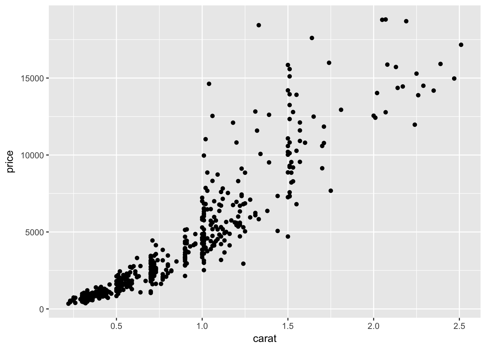
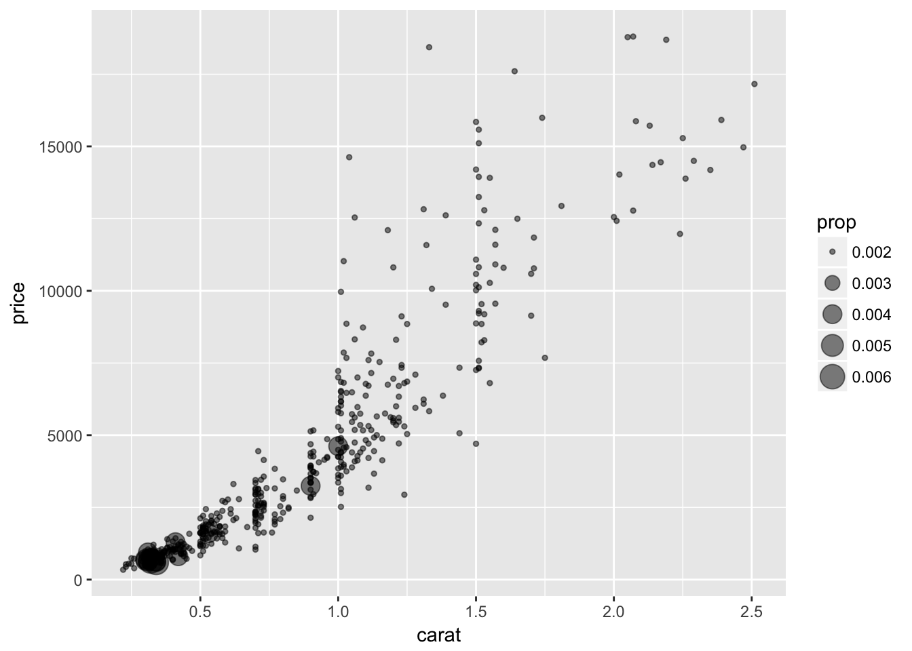
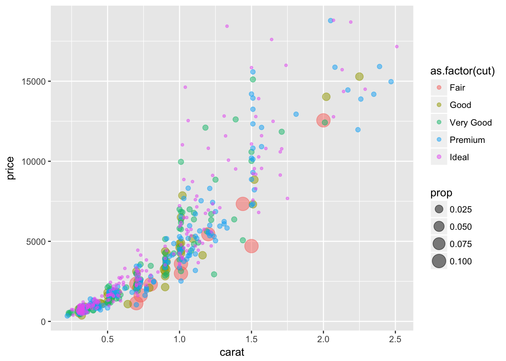
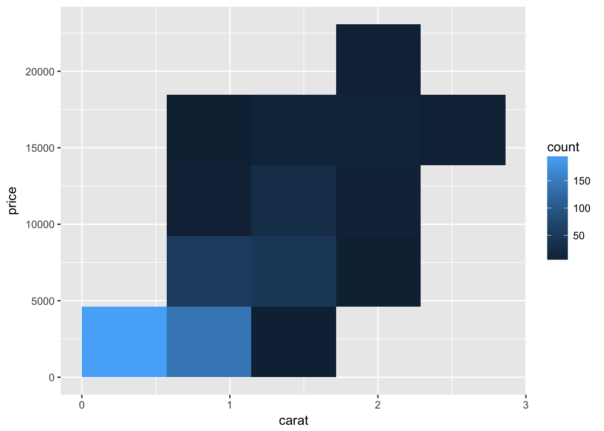
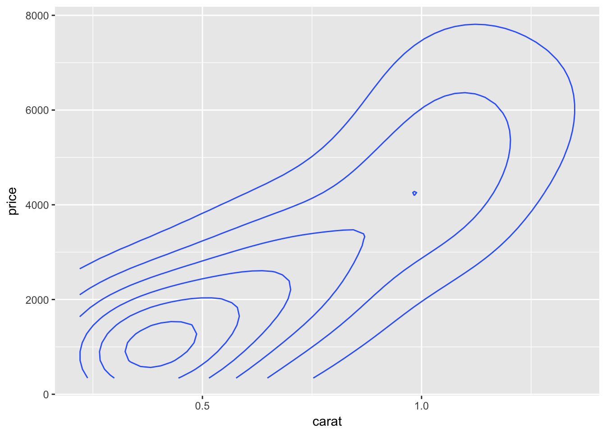
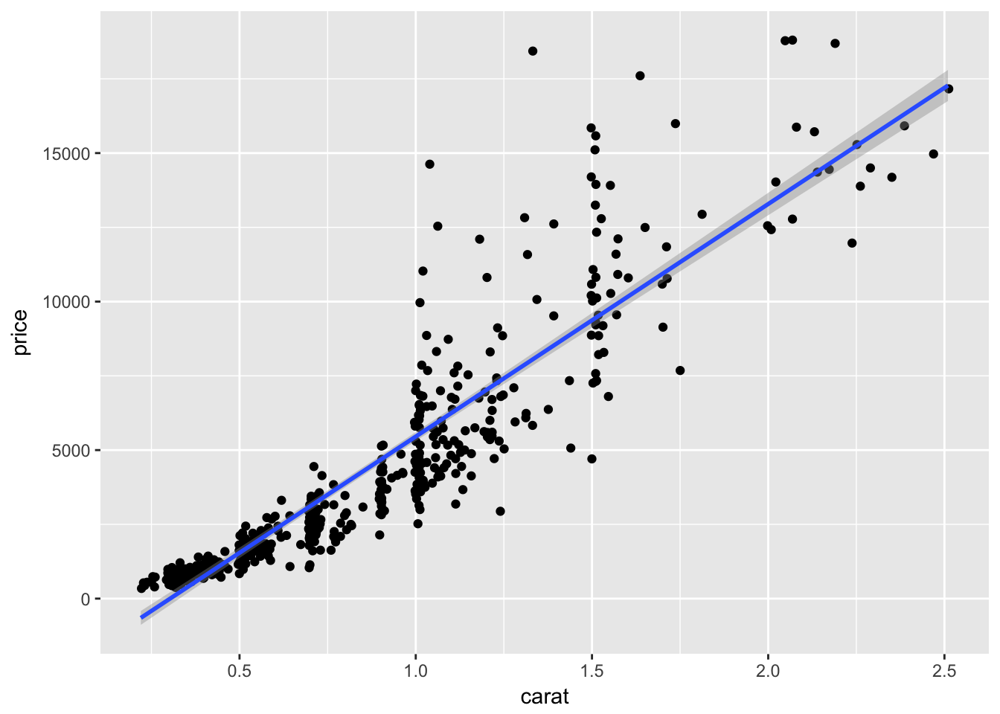
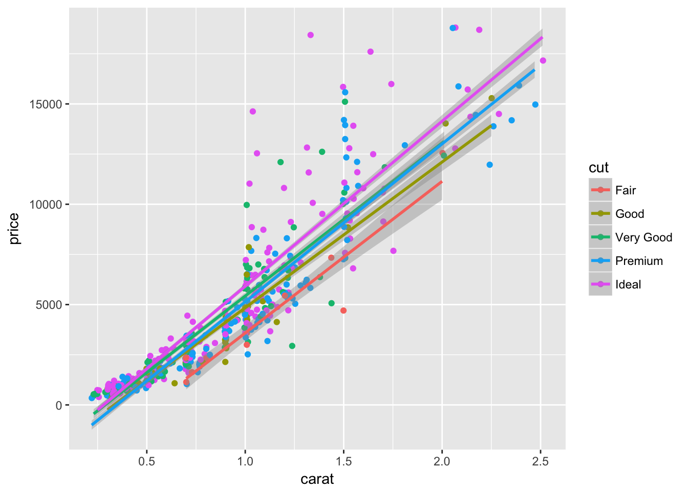
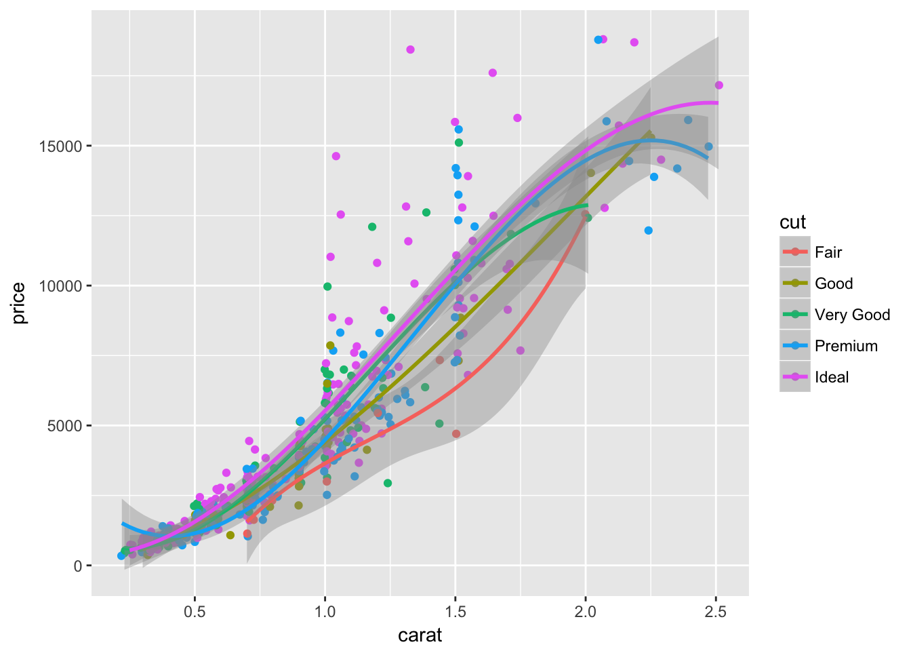

Data Preparation
library(tidyverse)
set.seed(5)
diamonds.small <- diamonds[sample(nrow(diamonds), 500), ]
1. Standard scatterplot of carat vs. price
d <- ggplot(diamonds.small, aes(x=carat, y=price))
d + geom_point()

2. Size of points is proportional to frequency (bubble plot)
d + geom_count(aes(size=..prop..), alpha=.5)

3. Bubble plot where color is determined by quality of cut
d + geom_count(aes(size=..prop.., color = as.factor(cut)), alpha=.5)

4. Tile plot showing the observed bivariate density of carat and price
d + geom_bin2d(bins=c(4,4))

5. A contour/level plot showing a two-dimensional kernel density estimate for the bivariate distribution of carat and price
d + geom_density2d()

6. A jittered scatter plot of carat versus price overlaid with the least squares regression line for predicting price based on carat. Include the 95% confidence bands around the line.
d + geom_jitter() + geom_smooth(method = "lm", se=T, level=.95)

7. A jittered scatter plot of carat versus price in which the cut quality is mapped to some aesthetic, overlaid with separate least squares regression lines for predicting price based on carat for each cut quality. Include the 67% confidence bands around the lines.
ggplot(diamonds.small, aes(x=carat, y = price, color=cut)) +
geom_jitter() +
geom_smooth(method = "lm", se=T, level=.67)

Repeat graph (7), but use polynomial regression instead of simple linear. Choose the polynomial degree you think (based on a visual inspection) gives the best fit with the smallest possible degree.
ggplot(diamonds.small, aes(x=carat, y = price, color=cut)) +
geom_jitter() +
geom_smooth(method = "lm", formula = y~poly(x,3))
